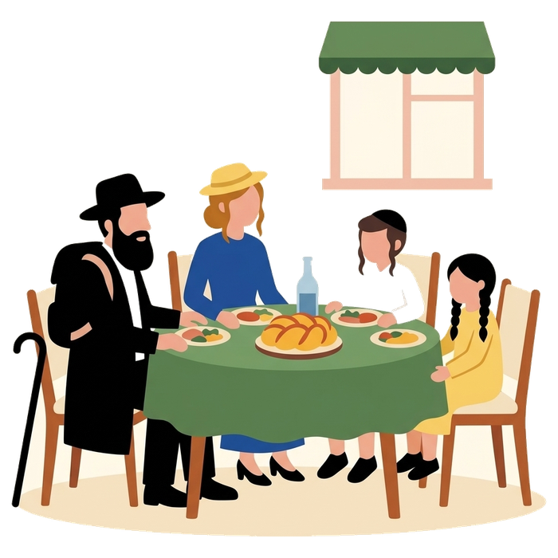
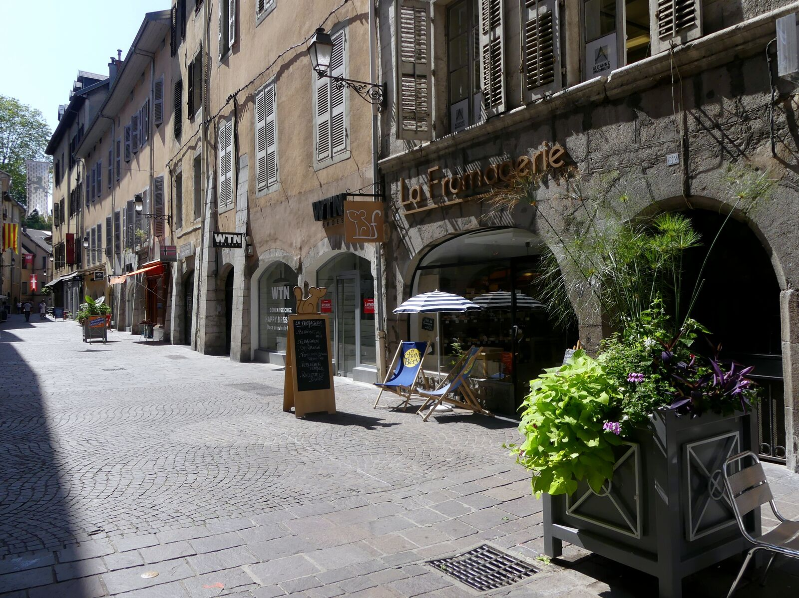

Home / Jewish Lyon guide / Kosher catering and Shabbat meals in Lyon
Kosher catering and Shabbat meals in Lyon
who cooks, how to order
Six caterers on the official list of the Beth Din de Lyon cook for Shabbat, and Chabad houses host on request. Whether each caterer delivers to a hotel is not published, so you ask before you order. We help you write, and you pay the caterer directly.
- 6 caterers certified by the Beth Din de Lyon
- 2 kosher groceries
- Order before Thursday
- Checked 7 October 2026

Caterers certified by the Beth Din 6
- Choch & Lenny15 rue Jean-Claude-Vivant, 69100 VilleurbanneMap
- La Cerise sur le Gâteau pastry41 rue Alexandre-Boutin, 69100 VilleurbanneMap
- Mazal Corinne3 rue Victor-Basch, 69100 VilleurbanneMap
- Les Gourmandises de Maëlle94 rue Hippolyte-Kahn, 69100 VilleurbanneMap
- Philibert David300 rue Francis-de-Pressensé, 69100 VilleurbanneMap
- Samuel Califa, Le Vôtre64 rue Docteur-Rollet, 69100 VilleurbanneMap
Source: official list of establishments certified by the Beth Din de Lyon, bethdin-lyon.fr and consistoireregionaldelyon.org, checked 8 September 2026. Menus, prices and delivery areas are not published: ask each caterer. All seven are in Villeurbanne.
Delivery to your hotel
No caterer on the list publishes a delivery service to hotels or a delivery area. Ask each one: do you deliver to my hotel, on which day and at what hour, and what do you need from me? Tell the hotel that a delivery is coming, and ask whether it can keep the food until Friday afternoon.
Three places on the Beth Din list state take-away or delivery: La Darka (07 66 05 11 49), Planet Sandwich (06 22 87 74 24) and, on Deliveroo and Uber Eats, Mika Sushi. These are weekday options. Nothing is delivered on Shabbat.
Two restaurants on the list also work as caterers: O'Sidney (04 72 16 08 35) and La Casa Del Coco (06 50 10 65 75).



How to order
- 1
Write to us
Send your dates, the number of people and your hotel or neighbourhood. Order before Thursday if you want a Shabbat meal.
- 2
We tell you who to ask
We send you the caterers closest to you and the questions to put to them, from the official list. We do not know which caterer delivers where, so you confirm with each one.
- 3
You order and pay the caterer
You place the order and pay the caterer directly. We take no commission and we do not handle the money.
Meals for groups
Group size, menus and prices are not published by any caterer on the list. For a synagogue group, a heritage trip or a family reunion, send us the number of people and the dates. We put you in touch with the caterers, and your guide builds the tour around your meals.
We guide on foot and do not provide buses. Your own transport, or the transport booked by your group, takes you to the meeting point.
Shabbat meals with Chabad
Tell us your dates and how many you are, and we put you in touch with a Chabad family for the Friday night meal and the Shabbat lunch: Chabad hospitality, no charge, a donation to the house is customary. For a Shabbat organised for your group alone, meals, synagogue walk and candle-lighting times included, we quote it. See Chabad in Lyon for the seven houses.
Groceries for a Shabbat in an apartment
Three groceries are certified by the Beth Din de Lyon: Hypercacher, 17 rue Claudius-Pionchon, 69003 Lyon (04 78 85 00 80), its new Hypercacher Garibaldi, 46 rue Garibaldi, 69006 Lyon, and Lilly Market, 140 rue Dedieu, 69100 Villeurbanne (04 78 03 24 79). Lilly Market has a second shop in Écully. Opening hours are not published: call, and buy on Thursday or Friday morning. Three butchers are also on the list: all kosher addresses in Lyon.
Caterers and groceries on the map
Six caterers and two groceries. Tap a marker for directions.
Shabbat meals: questions
Who certifies the caterers?
The Beth Din de Lyon, the rabbinical court of the Consistoire. The list is published on bethdin-lyon.fr. Call the Beth Din on 04 12 04 05 15 if you follow another standard.
Do caterers deliver to my hotel?
No caterer on the list publishes a hotel delivery service. Ask each one when you order. We help you write the message.
When must I order for Shabbat?
Before Thursday. No caterer publishes an order deadline, so write to us on Monday or Tuesday and we send you the list.
Do you cook or sell the meals?
No. The caterer sells and you pay the caterer. We take no commission.
Can I celebrate a Shabbat dinner with a group?
Yes, with advance notice. Group menus and prices are not published, so we ask the caterers for you once we know your dates and number of people.
Keep reading
Sources: bethdin-lyon.fr and consistoireregionaldelyon.org (official list), fr.chabad.org. Compiled by Mishpacha Tours from these sources. Checked 7 October 2026.